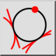
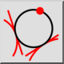

Menú: Dibujar > Círculo > 2 tangentes y punto
Acceso directo: C, T, 2
Comandos: circletangent2 | ct2
Barra de herramienta / icono:
 

Menú: Dibujar > Círculo > 2 tangentes y punto
Acceso directo: C, T, 2
Comandos: circletangent2 | ct2
Descripción:
Dibuja un círculo tangencial a dos entidades y pasa por un punto.
Procedimiento: